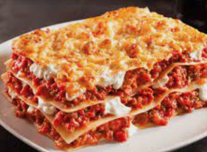

Lasagna Recipe

Description:
I can't think of a description for lasagna so please just pretend this is a description for lasagna.
Also most of this was stolen from google and this is (sadly) not a legit lasagna recipe.
Ingredients
- 2 tablespoons vegetable oil
- your first-born child
- 16 ounces whole wheat lasagna
- 3/4 cup chopped mushrooms
- 3 cloves of garlic
- 2 ounce pasta sauce
- 1 tsp dried basil
- 1 cup shredded parmesan cheese
Steps
- Cook lasagna noodles in a large pot of boiling water for 10 minutes, or until al dente. Rinse with cold water, and drain
- Heat vegetable oil in a hot saucepan, add in the garlic and mushrooms
- Let simmer for 10 minute
- Mix lasagna with basil, sauce and parmesan cheese
- Provide an offering to the devil with your first-born child to obtain a mystery item. Don't worry if no Item appears, that just means your pasta is already perfect and doesn't need any items to touch it up
- Incorporate all ingredients and bake in the oven at 350 F for 10 minutes
- Enjoy :)